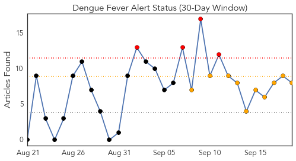
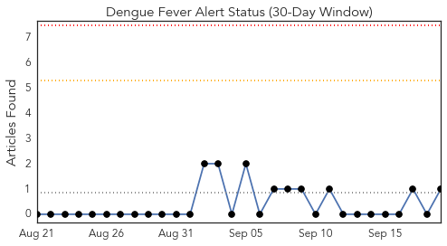
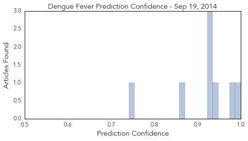
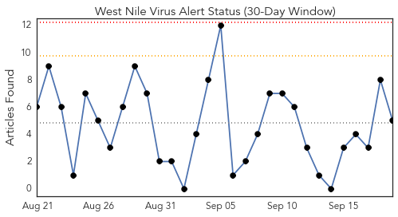
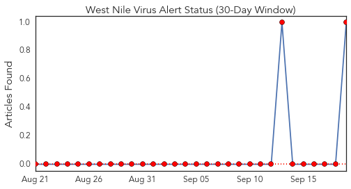
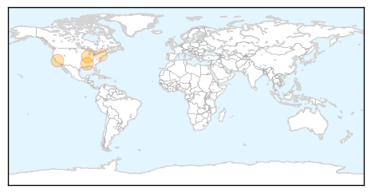
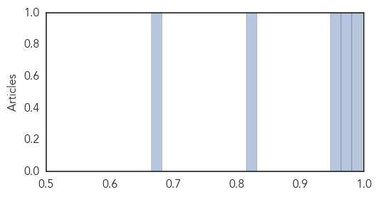

Dengue Fever
30-Day Web Trend
4 alerts, 10 warnings

30-Day Twitter Trend
0 alerts, 0 warnings

Article Locations

Article Confidences
Top Articles:
- 1.000
- Defeating dengue fever
- 0.975
- Mosquito density high, alerts issued in high-risk areas
- 0.936
- Officials spray insecticide in Ueno Park after new dengue fever case ‹ Japan Today
- 0.926
- Maduro says foreign media behind fears of epidemic
- 0.926
- Killer mosquito invasion reaches the UK from Europe
- 0.924
- Maduro says foreign media behind fears of epidemic
- 0.862
- ‘Efficient approach needed to prevent viral infections’
- 0.741
- SGGP English Edition- PM backs ASEAN health links
Top Tweets:
- 0.547
- Flavivirus news: Dengue positive cases rise to 75 - Times of India: Dengue positive cases rise ... http://t.co/r0REE0IPrN pathogenposse
West Nile Virus
30-Day Web Trend
0 alerts, 0 warnings

30-Day Twitter Trend
2 alerts, 0 warnings

Article Locations
Article Confidences
Top Articles:
Top Tweets:
- 0.571
- Flavivirus news: Suffolk: 176 mosquito samples have tested positive for West Nile virus - Newsd... http://t.co/fq45D1XhIS pathogenposse